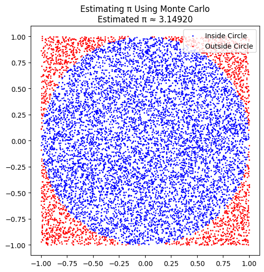
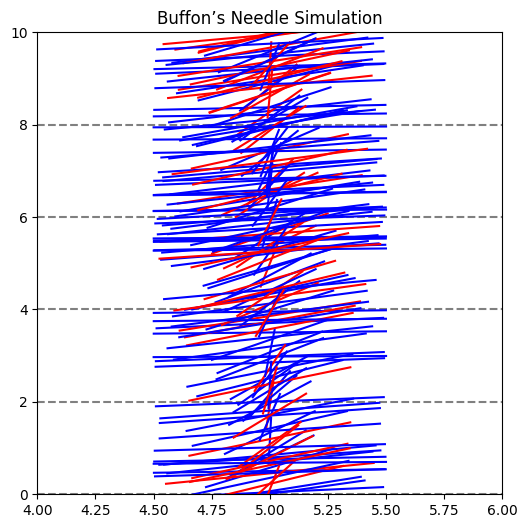

Problem: Estimating \(\pi\) Using Simulations
PART 1: Estimating \(\pi\) Using a Circle
1. Theoretical Foundation
To estimate \( \pi \), we can use the Monte Carlo method with a unit circle inscribed in a square. The idea is to generate random points inside the square and count how many fall inside the circle.
Since the area of a unit circle is \(\pi r^2 = \pi\) and the area of the square is \(4\) (since its sides go from -1 to 1), the ratio of the circle’s area to the square’s area is \(\pi / 4\). Therefore, we can estimate \(\pi\) as:
2. Simulation
import numpy as np
import matplotlib.pyplot as plt
# Monte Carlo simulation to estimate pi
def estimate_pi_circle(n_points):
x = np.random.uniform(-1, 1, n_points)
y = np.random.uniform(-1, 1, n_points)
inside_circle = x**2 + y**2 <= 1
pi_estimate = 4 * np.sum(inside_circle) / n_points
return pi_estimate, x, y, inside_circle
# Run simulation
n_points = 10000
pi_est, x_vals, y_vals, in_circle = estimate_pi_circle(n_points)
print(f"Estimated π: {pi_est}")
3. Visualization
plt.figure(figsize=(6, 6))
plt.scatter(x_vals[in_circle], y_vals[in_circle], color='blue', s=1, label='Inside Circle')
plt.scatter(x_vals[~in_circle], y_vals[~in_circle], color='red', s=1, label='Outside Circle')
plt.gca().set_aspect('equal')
plt.title(f"Estimating π Using Monte Carlo\nEstimated π ≈ {pi_est:.5f}")
plt.legend()
plt.show()

4. Analysis
- As the number of random points increases, the estimate becomes more accurate.
- The convergence is slow but consistent; doubling the points does not halve the error.
- This method demonstrates the strength of probabilistic approximation, but also its computational limitations.
PART 2: Estimating \(\pi\) Using Buffon’s Needle
1. Theoretical Foundation
Buffon’s Needle is a classic probability method for estimating \(\pi\). It involves dropping a needle of length \(L\) on a plane with parallel lines spaced \(t\) units apart.
The probability that the needle crosses a line is:
Rearranged to estimate \( \pi \):
Where:
- \(L\) = needle length
- \(t\) = distance between lines
- \(N\) = number of throws
- \(C\) = number of crossings
2. Simulation
import numpy as np
def estimate_pi_buffon(n_throws, L=1.0, t=2.0):
x = np.random.uniform(0, t/2, n_throws) # distance to closest line
theta = np.random.uniform(0, np.pi/2, n_throws) # angle with horizontal
crosses = x <= (L/2) * np.sin(theta)
C = np.sum(crosses)
if C == 0:
return None
pi_estimate = (2 * L * n_throws) / (t * C)
return pi_estimate, x, theta, crosses
# Run simulation
n_throws = 10000
pi_buffon, x_vals, theta_vals, cross_flags = estimate_pi_buffon(n_throws)
print(f"Estimated π via Buffon’s Needle: {pi_buffon:.5f}")
3. Visualization
import matplotlib.pyplot as plt
lines_y = np.arange(0, 10, 2)
plt.figure(figsize=(6, 6))
for y in lines_y:
plt.axhline(y, color='gray', linestyle='--')
for i in range(200):
y_center = np.random.uniform(0, 10)
theta = theta_vals[i]
x_start = 5 - (np.cos(theta)/2)
x_end = 5 + (np.cos(theta)/2)
y_start = y_center - (np.sin(theta)/2)
y_end = y_center + (np.sin(theta)/2)
color = 'red' if cross_flags[i] else 'blue'
plt.plot([x_start, x_end], [y_start, y_end], color=color)
plt.title("Buffon’s Needle Simulation")
plt.xlim(4, 6)
plt.ylim(0, 10)
plt.show()

4. Analysis
- Buffon’s Needle is elegant but has a high variance, meaning estimates can fluctuate.
- Requires a large number of trials for accuracy.
- Useful in demonstrating connections between geometry, probability, and estimation.
Deliverables
- Python scripts for both methods.
- Plots: circle hit/miss and Buffon’s needle visuals.
- Markdown write-up including:
- Theoretical foundations
- Visual and numerical results
- Accuracy and convergence comparisons
Hints & Resources
- Use
NumPyfor randomness andMatplotlibfor plotting. - Buffon’s method requires careful simulation of geometry (angle + distance).
- Monte Carlo circle method is simpler and converges more consistently.
- Run multiple trials or increase iterations to explore accuracy.
Summary
Both methods estimate \(\pi\) through randomness: - The circle-based Monte Carlo method is easier and more consistent. - Buffon’s Needle is more mathematically elegant but converges slowly. Each illustrates important statistical and computational ideas through simulation.